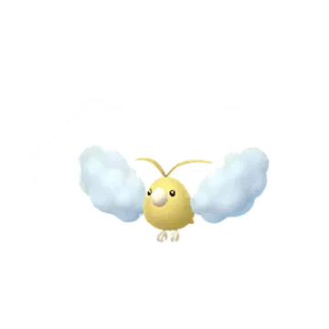
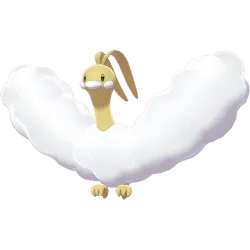
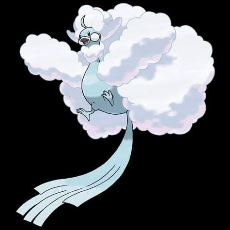
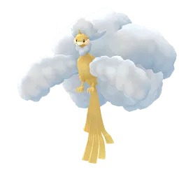

🧭 Quick Navigation
📖 Introduction
Mega Altaria’s Dragon and Fairy typing gives it strong defenses, requiring trainers to rely on Ice, Steel, or Fairy-type attackers for effective damage.
The Mega Evolution of Altaria, Mega Altaria is a powerful Dragon and Fairy-type Pokémon introduced to Pokémon GO through Mega Raids. Its unique dual typing gives it strong resistances against several common attack types while also making it resistant to Dragon-type moves.
Because Dragon attacks are normally one of the best ways to defeat Dragon-type raid bosses, Mega Altaria’s Fairy typing changes the battle strategy significantly. Trainers must instead rely on strong Ice, Steel, or Poison-type Pokémon to deal effective damage.
Mega Altaria is useful because:
- It boosts Dragon and Fairy-type attackers
- It is great against Dragon-type raid bosses
- It is a good Mega Pokémon for long raids due to its bulk
Although Mega Altaria can be a challenging opponent for small groups, trainers with well-prepared teams and the right counters can defeat it efficiently and earn valuable Mega Energy to power up their own Altaria.
Raid Difficulty
This raid typically requires 3–5 trainers depending on player level, counters, and weather conditions.
📊 Mega Altaria Stats
| Type | Dragon / Fairy |
| Max CP | 3576 |
| Weather Boost | Windy, Cloudy |
| Shiny | Yes |
| Base Atttack | 222 |
| Base Defence | 218 |
| Base Stamina | 181 |
Mega Altaria has balanced stats and moderate bulk, making it a manageable Mega Raid with a small group.
🎯 Catch CP & 100% IV
After defeating Mega Altaria, you will encounter a normal Altaria.
CP Range:
- No Weather Boost: 1727 – 1807 CP
- Weather Boost: 2159 – 2259 CP CP
100% IV:
- 1807 (Normal)
- 2259 (Weather Boosted)
Use:
- Golden Razz Berry
- Curveball Excellent Throws
⚠️ Mega Altaria Weaknesses
Mega Altaria is weak to following type:
| Category | Details |
|---|---|
| ❌ Weak To: |
 Poison • Poison •
 Steel • Steel •
 Ice • Ice •
 Fairy Fairy
|
| ✅ Resistant / Immune To: |
 Fighting • Fighting •
 Electric • Electric •
 Dark • Dark •
 Ground • Ground •
 Bug • Bug •
 Fire • Fire •
 Water • Water •
 Grass Grass
|
Notes: Ice attacks deal double super-effective damage, making Ice Pokemon the best raid counters.
🗡️ Best Counters for Mega Altaria
The best way to defeat Mega Altaria is to use strong Ice, Steel, Poison, or Fairy-type Pokémon.
❄️ Ice-Type Counters (Top Priority)
Ice-type Pokémon are the strongest counters against Mega Altaria’s double weakness. Fast moves like Ice Shard combined with Avalanche or Ice Beam deal maximum damage. Mega Ice Pokémon provide team-wide boosts, making the raid much faster when coordinated.
- White Kyurem: (Ice Fang / Ice Burn)
- Mamoswine: (Powder Snow / Avalanche)
Extremely high Ice attack stat
Massive Ice DPS with double weakness
✨ Fairy-Type Counters
Fairy Pokémon exploit Mega Altaria’s Dragon typing. Fast moves like Charm or Fairy Wind combined with Dazzling Gleam provide consistent damage and are a safe choice against Mega Altaria’s Flying moves.
- Gardevoir: (Charm / Dazzling Gleam)
- Enamorus: (Fairy Wind / Dazzling Gleam)
Boosts other Fairy types in raid
One of the best Fairy attackers
Why These Counters Work
Mega Altaria’s Dragon/Fairy typing gives it limited weaknesses, but Steel-type attackers are generally the safest and most consistent option because they resist both Dragon- and Fairy-type moves. Poison types deal strong super-effective damage to Fairy typing, while Ice types deliver high burst damage against Dragon typing. Selecting Pokémon that both resist incoming damage and hit for super-effective damage ensures faster clears and fewer relobbies.
Mega Altaria’s Dragon/Fairy typing makes it resistant to many common attackers. Focus on strong Ice and Steel attackers like Mamoswine and Metagross for consistent performance.
🏆 Best Regular Counters
Regular pokemon that amplify the right types give you a powerful edge. Below are top Regular counters with short notes on why they excel.
| Pokémon | 🗡️ Fast Moves | 💥 Charged Moves | 🔄 Elite Moves | 🏆 Best Moves | 🧪 Why This Counter Works |
|---|---|---|---|---|---|
| Naganadel | Air Slash / Poison Jab | Acrobatics / Sludge Bomb / Fell Stinger / Dragon Pulse / Dragon Claw | None | Poison Jab and Sludge Bomb | Poison-type attacker that exploits Fairy weakness with high attack stat. |
| Dialga | Metal Claw / Dragon Breath | Iron Head / Thunder / Draco Meteor | None | Metal Claw and Iron Head | Steel-type Iron Head hits Fairy typing super-effectively while Dialga resists Dragon-type moves from Mega Altaria. |
| Origin Dialga | Dragon Breath / Metal Claw | Iron Head / Thunder / Draco Meteor | Roar of Time | Metal Claw and Roar of Time | Metal Claw and Roar of Time provide strong Steel-type damage, exploiting Mega Altaria’s Fairy weakness while resisting Dragon attacks. |
| Enamorus | Zen Headbutt / Astonish / Fairy Wind | Dazzling Gleam / Grass Knot / Fly | None | Fairy Wind and Dazzling Gleam | Fairy-type moves deal super-effective damage to Mega Altaria’s Dragon typing and provide consistent neutral damage overall. |
| Black Kyurem | Shadow Claw / Dragon Tail | Stone Edge / Blizzard / Iron Head / Outrage / Fusion Bolt / Freeze Shock | None | Shadow Claw and Freeze Shock | Freeze Shock provides strong Ice-type damage that hits Dragon typing super-effectively. |
| Nihilego | Pound / Acid / Poison Jab | Gunk Shot / Sludge Bomb / Power Gem / Rock Slide | None | Poison Jab and Gunk Shot | Poison-type Sludge Bomb hits Fairy typing super-effectively with strong special attack. |
| Dawn Wings Necrozma | Shadow Claw / Metal Claw / Psycho Cut | Dark Pulse / Iron Head / Future Sight / Outrage / Moongeist Beam | None | Shadow Claw / Metal Claw and Moongeist Beam | Iron Head provides Steel-type coverage against Fairy typing, though it is not a top-tier counter. |
| Eternatus | Poison Jab / Dragon Tail | Flamethrower / Dragon Pulse / Sludge Bomb | Dynamax Cannon | Poison Jab and Sludge Bomb | Poison Jab and Sludge Bomb exploit Fairy weakness while benefiting from strong base stats. |
| Metagross | Fury Cutter / Bullet Punch / Zen Headbutt | Earthquake / Flash Cannon / Psychic | Shadow Claw / Meteor Mash | Bullet Punch and Meteor Mash | Steel-type Meteor Mash hits Fairy typing super-effectively and resists Dragon and Fairy moves. |
| White Kyurem | Dragon Breath / Steel Wing / Ice Fang | Blizzard / Ancient Power / Dragon Pulse / Focus Blast / Fusion Flare / Ice Burn | None | Ice Fang and Ice Burn | Ice Fang and Ice Burn deal strong super-effective damage to Mega Altaria’s Dragon typing with very high DPS. |
| Zacian | Metal Claw / Air Slash | Play Rough / Close Combat / Giga Impact / Behemoth Blade | None | Metal Claw and Play Rough | Metal Claw provides Steel-type coverage against Fairy typing while Play Rough adds consistent neutral damage. |
| Zamazenta | Metal Claw / Ice Fang | Moon Blast / Close Combat / Giga Impact / Behemoth Bash | None | Ice Fang and Giga Impact | Good Ice attacker |
| Dusk Mane Necrozma | Shadow Claw / Metal Claw / Psycho Cut | Dark Pulse / Iron Head / Future Sight / Outrage / Sunsteel Strike | None | Shadow Claw / Metal Claw and Sunsteel Strike | Sunsteel Strike delivers powerful Steel-type damage that hits Fairy typing super-effectively. |
👤 Best Shadow Counters
Shadow pokemon that amplify the right types give you a powerful edge. Below are top Shadow counters with short notes on why they excel.
| Pokémon | 🗡️ Fast Moves | 💥 Charged Moves | 🔄 Elite Moves | 🏆 Best Moves | 🧪 Why This Counter Works |
|---|---|---|---|---|---|
| Shadow Metagross | Fury Cutter / Bullet Punch / Zen Headbutt | Earthquake / Flash Cannon / Psychic | Shadow Claw / Meteor Mash | Bullet Punch and Meteor Mash | Shadow boost increases Meteor Mash damage, making it one of the highest DPS Steel-type counters against Fairy typing. |
| Shadow Dialga | Metal Claw / Dragon Breath | Iron Head / Thunder / Draco Meteor | None | Metal Claw and Iron Head | Steel-type Iron Head benefits from Shadow boost and hits Fairy typing super-effectively. |
| Shadow Excadrill | Mud Slap / Mud Shot / Metal Claw | Earthquake / Drill Run / Scorching Sands / Rock Slide / Iron Head | None | Metal Claw and Iron Head | Metal Claw and Iron Head deal boosted Steel-type damage that exploits Fairy weakness. |
| Shadow Mamoswine | Mud Slap / Powder Snow | Bulldoze / High Horsepower / Stone Edge / Avalanche / Icicle Spear | Ancient Power | Powder Snow and Avalanche | Shadow-boosted Ice damage hits Dragon typing super-effectively with very high DPS. |
| Shadow Gardevoir | Magical Leaf / Charge Beam / Confusion / Charm | Shadow Ball / Psychic / Triple Axel / Dazzling Gleam | Synchronoise | Charm and Dazzling Gleam | Shadow-boosted Fairy damage hits Dragon typing super-effectively with strong fast move pressure. |
| Shadow Mewtwo | Psycho Cut / Confusion | Focus Blast / Flamethrower / Thunderbolt / Psychic / Ice Beam | Hyper Beam / Shadow Ball / Psystrike | Confusion / Psycho Cut and Ice Beam | Ice Beam provides super-effective coverage against Dragon typing while benefiting from Shadow boost. |
| Shadow Overqwil | Poison Jab / Poison Sting | Sludge Bomb / Shadow Ball / Aqua Tail / Ice Beam / Aqua Tail | None | Poison Jab and Sludge Bomb | Shadow-boosted Poison damage hits Fairy typing super-effectively with solid DPS. |
| Shadow Regigigas | Hidden Power / Zen Headbutt | Giga Impact / Focus Blast / Thunder | Crush Grip | Hidden Power and Crush Grip | Good Provides team-wide type boost while contributing moderate neutral damage. role. |
| Shadow Gengar | Hex / Shadow Claw / Sucker Punch | Focus Blast / Drain Punch / Sludge Bomb / Shadow Ball | Lick / Sludge Wave / Shadow Punch / Psychic / Dark Pulse | Shadow Claw and Sludge Bomb | Shadow-boosted Sludge Bomb deals heavy Poison-type damage to Fairy typing with extremely high DPS. |
⚡ Best Mega Counters
Mega pokemon that amplify the right types give you a powerful edge. Below are top Mega counters with short notes on why they excel.
| Pokémon | 🗡️ Fast Moves | 💥 Charged Moves | 🔄 Elite Moves | 🏆 Best Moves | 🧪 Why This Counter Works |
|---|---|---|---|---|---|
| Mega Metagross | Fury Cutter / Bullet Punch / Zen Headbutt | Earthquake / Flash Cannon / Psychic | Shadow Claw / Meteor Mash | Bullet Punch and Meteor Mash | Meteor Mash deals massive Steel-type damage to Fairy typing while Mega boost increases Steel damage for the entire team. |
| Mega Lucario | Counter / Bullet Punch | Close Combat / Power-Up Punch / Aura Sphere / Shadow Ball / Flash Cannon / Meteor Mash / Blaze Kick / Thunder Punch | Force Palm | Bullet Punch and Flash Cannon | Flash Cannon hits Fairy typing super-effectively while Mega boost enhances Steel damage for teammates. |
| Mega Gardevoir | Magical Leaf / Charge Beam / Confusion / Charm | Shadow Ball / Psychic / Triple Axel / Dazzling Gleam | Synchronoise | Charm and Shadow Ball / Dazzling Gleam | Fairy-type moves hit Dragon typing super-effectively while boosting Fairy damage for the whole team. |
| Mega Gengar | Hex / Shadow Claw / Sucker Punch | Focus Blast / Drain Punch / Sludge Bomb / Shadow Ball | Lick / Sludge Wave / Shadow Punch / Psychic / Dark Pulse | Lick and Sludge Bomb | Sludge Bomb deals powerful Poison-type damage to Fairy typing while boosting Poison-type teammates. |
| Mega Beedrill | Poison Jab / Poison Sting / Infestation | Aerial Ace / Sludge Bomb / X-Scissor / Fell Stinger | Bug Bite / Drill Run | Poison Jab and Sludge Bomb / Drill Run | Poison Jab and Sludge Bomb exploit Fairy weakness while Mega boost increases Poison-type damage team-wide. |
| Mega Rayquaza | Air Slash / Dragon Tail | Aerial Ace / Dragon Ascent / Ancient Power / Outrage | Hurricane / Breaking Swipe | Dragon Tail and Dragon Ascent | Provides team-wide type boost while contributing moderate neutral damage. |
| Mega Alakazam | Psycho Cut / Confusion | Focus Blast / Shadow Ball / Fire Punch / Future Sight | Counter / Psychic / Dazzling Gleam | Confusion and Focus Blast | Provides team-wide type boost while contributing moderate neutral damage. |
| Mega Aggron | Smack Down / Iron Tail / Metal Sound / Dragon Tail | Stone Edge / Rock Tomb / Meteor Beam / Heavy Slam / Thunder | None | Iron Tail / Dragon Tail and Meteor Beam | Steel-type Heavy Slam hits Fairy typing super-effectively while providing strong defensive bulk. |
💊 Revive & Potion Cost
- Average revives used: 8–14
- Average potions used: 10–18
- Dodging significantly reduces resource usage
- Using Mega Pokémon reduces total relobbies
❌ Common Raid Mistakes
Avoid using fragile Water attackers, and be cautious with glass-cannon Ice types if not powered up. Also be cautious with Ghost types if Altaria runs Crunch.
🧩 Best Team Compositions
- Lead with strongest Ice-type attacker
- Follow with two additional Ice Pokémon
- Add one Dragon-type attacker as backup
- Finish with Fairy-type Pokémon for coverage
Avoid Grass, Bug, and Fighting Pokémon, as they deal minimal damage.
Optimized Team
- Mega Metagross
- Mega Gengar
- Shadow Metagross
- Dialga
- Nihilego
- Mamoswine (Powder Snow + Avalanche)
Budget Team
- Metagross
- Excadrill
- Weavile (Ice Shard + Avalanche)
- Mamoswine (Powder Snow + Avalanche)
- Roserade
- Gengar
👥 Raid Difficulty & Trainers Needed
Mega Altaria is not overly difficult due to its moderate attack. However, stacking the right counters reduces risk and speeds up the battle.
- 1–2 Trainers: Possible with optimized Ice-type teams
- 3 Trainers: Comfortable clear
- 4+ Trainers: Very easy win
🧠 Raid Strategy
1. Focus on Ice-Type Damage
Ice-type Pokémon deal strong super-effective damage against Mega Altaria’s Dragon typing and are the fastest way to defeat Mega Altaria. Stack as many Ice-type attackers as possible to quickly take down its high stamina.
2. Dodge Charged Moves
Mega Altaria’s Dragon Breath applies steady pressure, while charged moves like Moonblast, Dazzling Gleam, or Sky Attack can hit very hard if not dodged. Dodging these moves preserves your top DPS counters, especially Ice Pokémon that may be frail.
3. Coordinate Mega Evolutions
A single Mega Ice Pokémon provides a team-wide boost to Ice-type moves. Coordinate with your group to maximize damage throughout the battle.
Mega Altaria’s Dragon and Fairy typing creates a distinctive set of vulnerabilities — most notably to Steel-, Poison-, and Ice-type attacks. Trainers should focus on Pokémon that can both resist Altaria’s moves and deal super-effective damage. Pokémon like Metagross with Meteor Mash, Roserade with Sludge Bomb, and Mamoswine with Ice Shard and Avalanche are strong candidates because they exploit multiple weaknesses.
Weather plays an important role in this raid. During Snowy or Partly Cloudy weather, Ice-type moves receive a boost, making Ice counters particularly effective. In Rainy conditions, Poison-type moves are stronger, which can help Pokémon like Roserade or Nidoking deal more damage per second. Trainers should adapt their team depending on the weather forecast at the time of the raid to make the most of these boosts.
Dodging charged attacks like Dragon Pulse and Moonblast can significantly improve your team’s survivability, especially in smaller raid groups. When dodging isn’t possible due to fast attack cadence, prioritize using Pokémon with higher bulk so they can survive long enough to deal meaningful damage. Mega Evolutions such as Mega Steelix or Mega Gardevoir are optional, but when used strategically they can provide valuable resistances and assist in dealing consistent DPS.
For best results, lead with your strongest counters at the start of the battle to apply pressure right away. If your team starts taking heavy damage, rotate in secondary counters that still exploit weaknesses but have better overall durability. With smart weather consideration and tactical dodging, Mega Altaria can be defeated consistently and efficiently.
🌦️ Weather Boost
Weather conditions significantly affect Mega Altaria raids:
🌨️ Snowy Weather
- boosts Ice-type counters
☁️ Cloudy Weather
- boosts Poison & Fairy-type counters
🌬️ Windy Weather
- boosts Dragon-types counters
🌀 Mega Altaria Moveset
The best moveset for Mega Altaria is:
🗡️ Fast Moves
- Peck
- Dragon Breath
💥 Charged Moves
- Dragon Pulse
- Dazzling Gleam
- Flamethrower
- Sky Attack
🔄 Elite Moves
- Moonblast
Dangerous Moves: Moonblast and Dazzling Gleam hit very hard.
Pro tip: Fairy-type charged moves, in particular, can quickly wipe out Dragon attackers, so avoid relying on Dragons unless you’re sure about its moveset.
✨ Can Mega Altaria Be Shiny in Pokémon GO?
Yes, trainers can encounter a Shiny Altaria after defeating Mega Altaria in a Mega Raid. While the Mega form itself cannot be caught, the encounter after the raid may be shiny.
Shiny Altaria has a distinctive golden body instead of the normal blue color, making it one of the most visually striking shiny Pokémon in the game.
Participating in multiple Mega Altaria raids increases the chance of encountering a shiny version, making it a popular target for shiny hunters.
Evolution, Mega Details & Buddy Distance
| Evolution Line | Base(Swablu) → Stage(Altaria) → Mega(Altaria) |
| Mega Energy (First) | 300 |
| Subsequent Cost | 60 |
| Mega Energy via Buddy | Yes |
| Mega Boost Bonus(Walking) | Extra Candy |
| Mega Boost Bonus(Catch) | Extra Fairy/Dragon-type Candy |
| Mega Boost Bonus(Buddy^) | 5 Mega Energy per candy |
🚶 Buddy Distance
1 km (per Pokémon GO buddy distance)
⚖️ Shadow & Mega Comparison
🧬 Best Mega Evolutions
Recommended Megas to use against Mega Altaria:
- Metagross, Aggron – ⚙️ Steel boost
- Gardevoir – ✨ Fairy & 🔮 Psychic boost
- Gengar – ☠️ Poison & 👻 Ghost boost
- Rayquaza – 🐉 Dragon & 🕊️ Flying boost
- Alakazam – 🔮 Psychic boost
🎁 Raid Rewards
Defeating Mega Altaria in a Mega Raid in Pokémon GO rewards trainers with several useful items, including healing items, Rare Candy, and a chance to catch Altaria after the battle. The exact rewards may vary depending on raid performance and bonuses.
| Reward | Typical Amount |
|---|---|
| Golden Razz Berry | 3 – 12 |
| Rare Candy | 3 – 9 |
| Revive | 6 – 15 |
| Hyper Potion | 6 – 15 |
| Fast TM | 0 – 2 |
| Charged TM | 0 – 2 |
| Stardust | 1000 |
Mega Energy Reward
Mega Raids also reward Mega Altaria Mega Energy. The amount received depends on how quickly the raid is completed.
| Raid Completion Speed | Mega Energy Reward |
|---|---|
| Very Fast (High performance) | 80 – 90 Mega Energy |
| Moderate Speed | 60 – 80 Mega Energy |
| Slow Completion | 50 – 60 Mega Energy |
📌 Is Mega Altaria Worth Raiding?
Mega Altaria provides Mega Energy for boosting Dragon- and Ice-type Pokémon. Its balanced stats and manageable difficulty make it ideal for small or medium groups. It is also a popular choice for collectors due to its Mega Evolution.
🖼️ Regular vs Shiny Mega Altaria Forms
Shiny Alakazam has a slightly different color compared to the normal version, with a more golden appearance.
Swablu

Shiny Swablu
Altaria

Shiny Altaria

Mega Altaria

Shiny Mega Altaria
Tips & Tricks
- Bring at least two high-DPS Ice-type Pokémon for effective counters.
- Focus on dodging only when necessary to maximize total damage output.
- Link your guide to related raids like 3★ Altaria to help trainers plan efficiently.
❓ FAQ
Can Mega Altaria be shiny in Pokémon GO?
Shiny Altaria has been released in raids or events.
Is Mega Altaria difficult?
Without Ice counters it can take longer, but with proper teams it is manageable.
Can it be defeated by two trainers?
Yes, strong Ice-type teams can duo this raid.
Best Mega boost support?
A Mega Ice-type Pokémon significantly boosts team-wide Ice damage.
Does Mega Altaria keep its Mega form after the battle?
Mega Evolution lasts only during battles where Mega is enabled; it does not persist outside combat.
What is Mega Altaria’s exclusive move?
Mega Altaria can use moves like Dragon Pulse and Moonblast, dealing massive damage while taking advantage of its dual typing.
Is Mega Altaria difficult to defeat?
It has balanced stats with strong defenses. Using type-advantage counters ensures efficient battles without much risk.
What makes Mega Altaria unique?
Its fluffy, cloud-like Mega form, Dragon/Fairy typing, and powerful moves make Mega Altaria visually stunning and strategically versatile in Max Raid Battles.
🏁 Conclusion
Mega Altaria raids are straightforward when focusing on Ice-type counters. Coordinate Mega boosts, take advantage of Snowy weather, and stack high-DPS Pokémon to defeat Mega Altaria quickly and safely. This raid offers excellent rewards and valuable Mega Energy for future battles.
- Focus on Steel, Ice, Poison, or Fairy attackers.
- Prepare for a longer fight compared to glass-cannon Megas.
- Avoid Dragons unless you know the moveset.
- Bring a Mega Steel or Mega Ice if possible to boost team damage.
⚡Quick picks
- Best Mega Team: Lucario, Metagross
- Best Shadow Team: Metagross
- Best Regular Team: White Kyurem, Dusk Mane Necrozma, Zamazenta